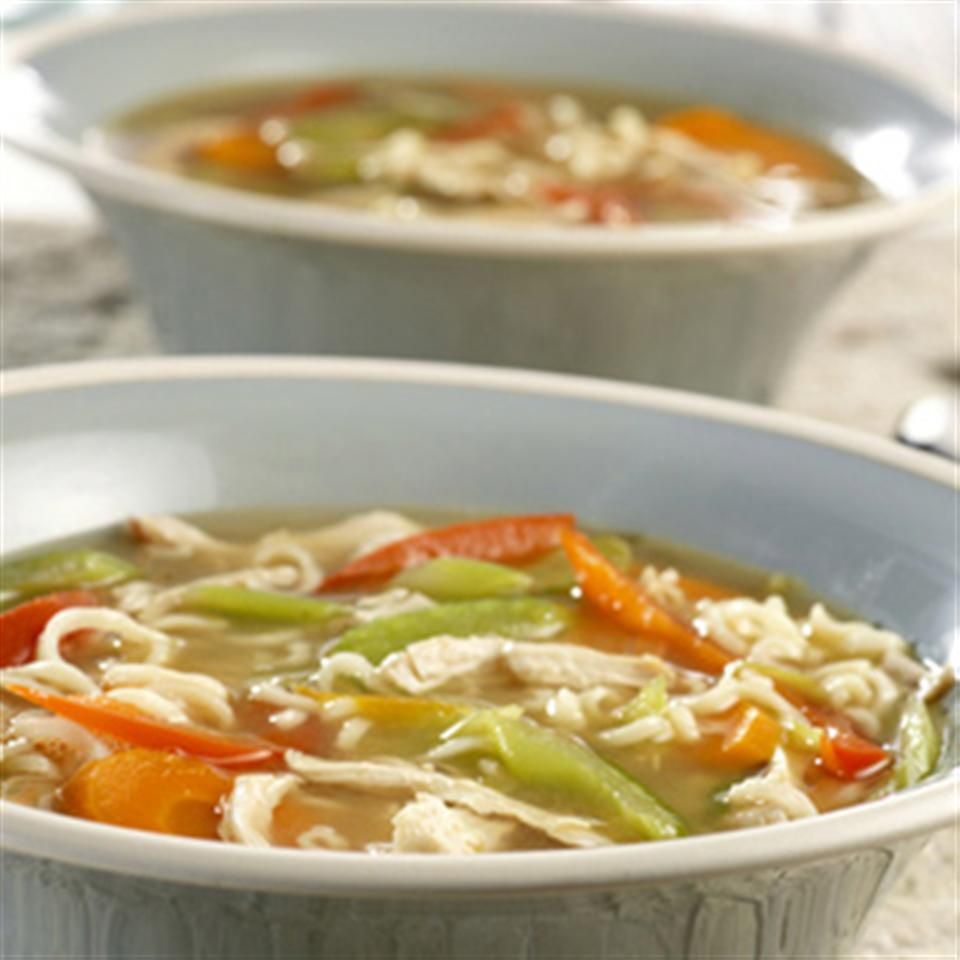

Easy Creamy Chicken Ramen

Description
Chicken ramen is a comforting Japanese noodle soup that features tender chicken, flavorful
broth, and chewy ramen noodles. Often garnished with toppings like green onions, soft-boiled
eggs, nori (seaweed), and bean sprouts, it’s a hearty dish that combines rich umami flavors
with a satisfying texture. Perfect for a cozy meal!
Ingredients:
- 1 tablespoon unsalted butter
- 2 cloves garlic, minced
- ½ cup chicken broth
- ½ cup whipping cream
- 1 (3 ounce) package ramen noodles (without flavor packet)
- 1 teaspoon reduced-sodium soy sauce
- ¼ cup chopped cooked chicken
- 1 pinch everything bagel seasoning (optional)
Steps:
-
Melt butter in a heavy skillet over medium heat. Add minced garlic and cook, stirring,
until fragrant, about 30 seconds. Add chicken broth, cream, and ramen noodles. Cook,
stirring occasionally, until noodles soften, about 3 minutes.
- Add soy sauce and chopped cooked chicken. Allow to get hot.
- Serve garnished with everything bagel seasoning if desired.
Enjoy your creamy chicken ramen!